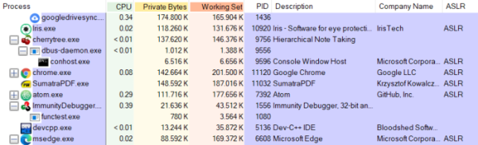

Security Implementations
To prevent, the exploitation of vulnerabilities such as Buffer
Overflow these are some security implementations
•
Address Space Layout Randomization
(ASLR) When ASLR is activated, the OS loads the same executable
at different locations in memory every time(at every reboot)
This
makes more difficult for an attacker to predict memory addresses and causes exploits to fail and crash the
process
Even if an application has ASLR enabled, there could be a linked DLL(library) in the address space
without this protection which could make the application vulnerable to the ASLR bypass attack.
•
Data
Execution Prevention (DEP): DEP is a defensive hardware and software measure that prevents the
execution of code from pages in memory that are not explicitly marked as executable. The code injected into the
memory cannot be run from that region; this makes buffer overflow exploitations even harder
•
Stack
Cookies (or Canary): This is a security implementation that places a value next to the return
address on the stack.
The function
prologue loads a value into this
location, while the
epilogue makes sure that the value is intact.
When
the
epilogue runs and checks that the value is incorrect a Buffer Overflow has
probably taken place.
This is because a buffer overflow usually overwrites data in the
stack.
Process Explorer Download:
https://docs.microsoft.com/en-us/sysinternals/downloads/process-explorerWith
this program on Windows we can verify if the Security implementations are enabled on a program
*on Windows 7
to install it is necessary the update: Security Update for Windows 7 (KB2758857)
